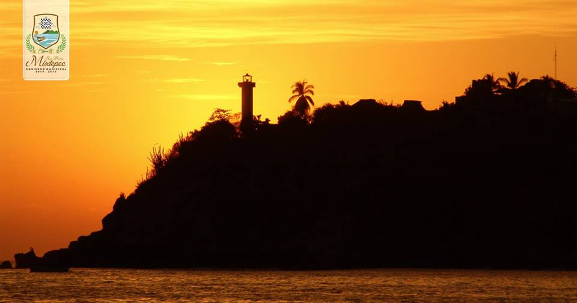

Playa Marinero

Hacia el oriente de la Playa Principal se localiza esta playa ideal para practicar surf y bodysurf. Por las tardes se contemplan bellas puestas de sol.
Tiene una longitud aproximada de 200 metros, por un ancho que varía entre los 40 y 50 metros. El agua y la arena presentan las mismas características que la playa Principal. Es ideal para la práctica del surfing y bodyboard, y sobre todo recomendable a principiantes en este deporte.
Por las tardes, desde este lugar se contemplan bellas puestas de sol. Cuenta con servicio de hotel y restaurante; además hay servicio de vestidores, regaderas, sanitarios, renta de parasoles y renta de caballos.
Para llegar a Marinero se debe tomar la carretera costera, con destino a Puerto Angel a 200 metros, desviarse a la derecha, hasta llegar a la playa. Por la playa se llega caminando al sureste de la Bahía Principal.